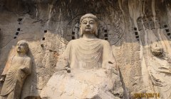

| 洛阳 luoyang | ||||||||||||||||||
| 龙门石窟 | ||||||||||||||||||
| 龙门石窟龙门石窟是中国石刻艺术宝库之一，世界文化遗产、全国重点文物保护单位、国家AAAAA级旅游景区，位于洛阳市南郊伊河两岸的龙门山与香山上。龙门石窟与敦煌莫高窟、云冈石窟并称中国三大石窟。 龙门石窟开凿于北魏孝文帝年间，之后历经东魏、西魏、北齐、隋、唐、五代、宋等朝代连续大规模营造达400余年之久，南北长达1公里，今存有窟龛2345个，造像10万余尊，碑刻题记2800余品。其中“龙门二十品”是书法魏碑精华，褚遂良所书的“伊阙佛龛之碑”则是初唐楷书艺术的典范。 龙门石窟延续时间长，跨越朝代多，以大量的实物形象和文字资料从不同侧面反映了中国古代政治、经济、宗教、文化等许多领域的发展变化，对中国石窟艺术的创新与发展做出了重大贡献。2000年被联合国科教文组织列为世界文化遗产。 |
||||||||||||||||||
| 主要景观： | ||||||||||||||||||
|
 | |||||||||||||||||
| 外界评价 | ||||||||||||||||||
世界遗产委员会的评价：龙门地区的石窟和佛龛展现了中国北魏晚期至唐代（公元493年～907年）期间，最具规模和最为优秀的造型艺术。这些详实描述佛教中宗教题材的艺术作品，代表了中国石刻艺术的最高峰。
龙门石窟因为满足世界文化遗产下列评定标准：
（i） 人类艺术创造力的杰出表现。
（ii） 是对悠久历史的艺术形式的完美展现，在这一区域的文化发展中扮演着重要的角色。
（iii）是对中国唐朝高度的文化水平和成熟的社会的展现 |
||||||||||||||||||